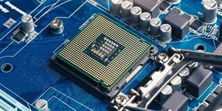

Processors (CPUS)
Processor Concepts
Choosing a CPU
- Compatibility: Ensure the processor matches the motherboard’s socket and specifications.
- Manufacturers: Intel and AMD are the two main CPU producers.
- Intel has a larger market share, while AMD often offers lower-cost alternatives.
- Performance and features vary across models.
Key Processor Features & Considerations
32-bit vs. 64-bit Processors
- 64-bit processors support more memory and perform better with 64-bit applications.
- Instruction Sets:
- 32-bit CPUs use IA-32 (x86).
- 64-bit CPUs use x86-64 (AMD64, Intel 64).
- Compatibility:
- 32-bit apps run on 64-bit processors using built-in hardware support.
- 64-bit apps require a 64-bit OS to utilize full performance benefits.
Multi-Core Processors
- Dual-core, quad-core, and higher-core processors allow for multitasking and better performance.
- Multi-core processors share a single motherboard socket, while multi-processor systems use multiple sockets.
- Some applications are optimized for multi-core performance.
Processor Speed (Clock Rate)
- Measured in MHz or GHz; faster speeds mean better performance.
- Motherboard must support the CPU’s speed.
- Some motherboards allow manual speed configuration in BIOS/CMOS.
Cache Memory (L1, L2, L3, L4)
- L1 Cache: Smallest and fastest, stores processor instructions.
- L2 Cache: Stores both instructions and data; may be shared or exclusive per core.
- L3 Cache: Larger and shared across cores for improved multi-core efficiency.
- L4 Cache: Dynamically shared between CPU and integrated GPU.
- More cache = Better performance (if other specs are equal).
Process Size (Fabrication Technology)
- Measured in nanometers (nm), smaller process sizes mean:
- More transistors per chip.
- Lower power consumption.
- Higher efficiency and performance.
Hyper-Threading (HT Technology)
- Intel’s Hyper-Threading allows one core to process two threads simultaneously.
- Multithreading applications maximize performance by utilizing multiple cores or hyper-threading.
Throttling
- Reduces CPU power usage and heat output when not under heavy load.
- Common in mobile processors for energy efficiency.
Overclocking
- Manually increasing CPU speed beyond factory limits for extra performance.
- Risks: Higher heat, reduced lifespan, and voided warranty.
- Turbo Boost (Intel) dynamically increases clock speed when needed.
Mobile Processors
- Optimized for low power consumption and reduced heat output.
- Found in laptops, tablets, and smartphones.
Virtualization Support
- Enables running multiple OS instances on one machine.
- Modern CPUs include hardware-assisted virtualization:
- Intel VT (Virtualization Technology)
- AMD-V (AMD Virtualization)
Integrated Memory Controller & GPU
- Improves memory access speed and graphics performance.
- Useful for budget builds that don’t require a dedicated GPU.
Cooling & Heat Management
- Cooling is essential to prevent overheating.
- Cooling options include:
- Heat sink & fan (air cooling).
- Liquid cooling for high-performance CPUs.
- Thermal paste to improve heat transfer.
